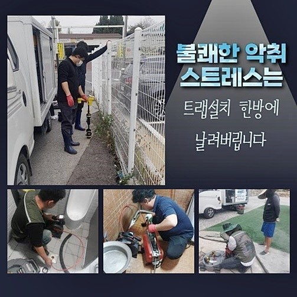
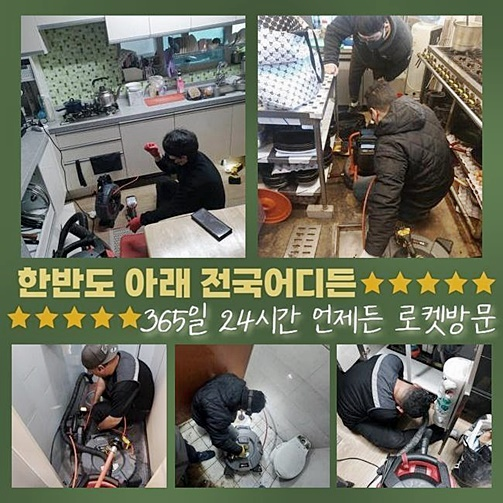
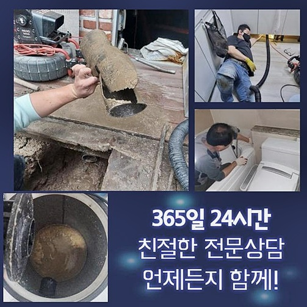
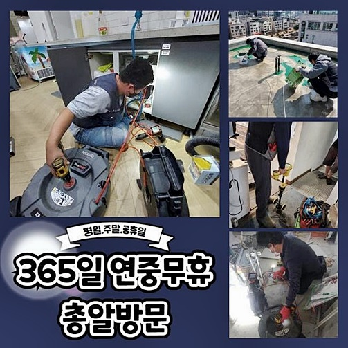
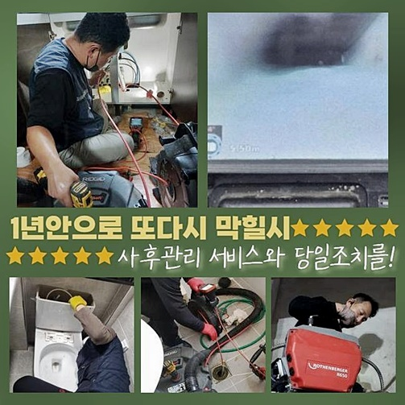
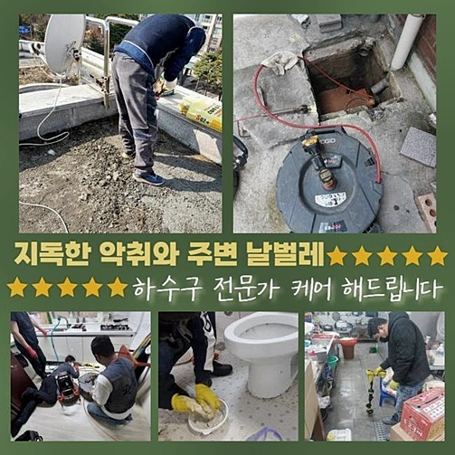
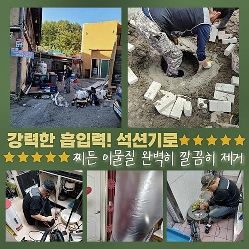

🏠 강동구 둔촌동싱크대역류 성내동 하수구뚫는비용 출장수리
용인시 처인구 배관막힘 전문 시공 후기

📋 작업 개요
- 위치: 용인시 처인구, 수원시 영통구, 화성시 동탄
- 서비스 유형: 배관막힘, 고압세척
- 작업 일시:
- 업체명: 하수구수사대 (010-5615-2118)
🔍 문제 상황
강동구 둔촌동싱크대역류 성내동 하수구뚫는비용 출장수리
오늘 소개할 곳은 다수의 호실이 있는 건물에서 갑작스레 마주하게 된 하수구 중단이었어요
셀프 클리너나 청소 도구를 쓰셔서 고객님선에서의 처리를 이어가실 수 있지만 전문가에게 요청하시는 방향이 예후도 좋고 안전한 결과물을 얻는 지름길이라 말씀드리겠습니다
정상적인 하수 배출이 일어나지 않으면 초반부에는 이로인한 영향이 피부로 와닿지 않더라도 점차 방치기간이 길어질 수록 막대한 손실을 부르는 하자로 악화될 위험이 있어요
고여있던 물이 위로 범람하는 것은 배수관 내부에 오염물이 지독하게 머물러있다는 의미이므로 민첩하게 대응책을 세우는 마음가짐이 요구되는데요
그대로 습한 곳에 이물질이 머무르면 곰팡이 번식과 악취같은 다양한 도전과제들이 줄지어 나타날 수 있습니다
전에 부르셨던 업체에서는 작업을 포기하고 돌아갔기에 어려운 상황인데 수선을 담당해 주실 수 있겠냐고 부탁을 해오신 상태였습니다
많이 기다리신만큼 빠른 대처가 이뤄져야 한다 싶어서 덩달아 다급한 마음으로 찾아 뵙고 무슨 문제인지 들여다 봤습니다
그동안 목격해 온 문제들의 종류와 증세 시작점을 세부적으로 전달 주실수록 실제로 겪으신 내용을 활용한다면 수월하게 현장을 분석할 수 있어요
다른 곳에서 백기를 들었던 특수한 여건이니만큼 선행된 작업의 진척됐던 단계에 대한 안내도 하수관을 제대로 원상복구 시키는 힌트로 작용할 수 있답니다

🔎 원인 분석
💡 전문가 진단: 정밀 진단 장비를 사용하여 슬러지의 고착 여부를 판명하고 타격/세척 작업을 실시했습니다.
현황을 낱낱이 점검해보니 가지배관이 수렴되는 메인 관로와 오수관이 이물질로 가득차서 폐수 기능을 발휘하지 못하고 있었네요
이유를 더 잘 찾아보려고 하수구 마개를 열어보니 부패한 게 분명한 냄새가 유발됐고 불투명해진 하수들도 갈 길을 찾지 못하고 썩고 있었네요
사안이 더 확대되기 이전에 급한 불부터 꺼야한다고 생각했고 내부로 범람해온 물을 뽑아내기 시작했어요
계속해서 제거업무를 이어가니 점차 꼴꼴대며 물이 흘러가는 양상이 감지되었습니다
겉으로 보이는 오염원들을 전부 치웠음에도 불구하고 그 밑에는 가늠할 수 없는 양의 노폐물들이 정착해 있을 것이었죠
빼곡하게 오물이 들어차고 물도 뿌얘서 카메라 관측이 난감했기에 석션 기기로 흡수시키면서 없애나갔습니다
비교적 생성이 얼마 안 된 막힘 상황이면 흡입기 시공만 실시하더라도 본래의 기능이 되살아나요
배수구는 물이 집수정으로 빠져나가는 중심이 되는 길이므로 생활하수에 혼재되어 있는 노폐물이나 오랫동안 머무른 석회성 물질이 축적돼서 버티지 못하고 사고가 나는 것입니다
하수구의 건강을 지키려면 표면을 덮는 그리드를 대비용으로 설치해서 크고 작은 찌꺼기가 유입되지 않게 만들거나 전문가의 힘을 빌려서 배관 건강을 제때 진단하고 항시 모니터링하면서 상태를 봐줘야 합니다
배관 특화성의 카메라로 배수로를 진단해 보고 이물질의 이모저모를 관찰하면서 문제의 기원을 밝혀내고 명확한 작업의 노선을 픽스할 수 있게 됩니다
배관의 숨은 구석까지 빼놓지 않고 상세하게 두루두루 살피면서 재발의 위험까지도 대비하는 방책을 세울 수 있었습니다

🔧 작업 과정
작은 작업지라도 모든 도구와 기계를 마련해가니 특이한 케이스거나 노후가 심각한 하수 설비를 마주하더라도 문제 없이 구체적인 검토를 할 수 있고 복구 괒어도 무난하게 이어갈 수 있습니다
하수구에 장기간 정체된 가정 폐기물이 가장 뚜렷한 문제가 됨을 알아차렸고 통로의 상당 부분이 봉쇄되어서 하수관의 고질적인 막힘이 유발된 것으로 간주됐어요
물에 머물러도 사라지지 않는 성질에 암만 물을 부어도 떠내려가지 않고 고정력을 보이는 이물질이 착 붙어있다면 파이프 청소를 받지 않고는 쉬이 해결되지 않는 문제예요
고압수를 통한 세척법은 상황에 따른 조절이 요구되기 때문에 숙련자를 찾는 것이 효율적이니 추천하고 싶습니다
세월에 의해 부식과 마모가 이뤄진 얇은 튜브에는 강도 높은 자극은 피해야 하니 고압세척을 소화할 수 있을지 신중히 따져보는 편입니다
저희 팀의 조사 이전에는 바깥과 이어지는 측면의 문제점일 거라고는 감도 못 잡았었고 앞선 업체도 내부 관로만 다뤘다고 해요
재빠르게 수행한 고압수를 활용한 시공은 안을 빼곡하게 채운 침전물을 일시에 깨끗이 정리해서 물 빠짐이 차질 없이 실현되도록 지원을 해주었습니다
다수의 하수관의 복구를 만들어온 경력이 있으니 융통성있게 주어진 현황에 맞게 시공 스케줄을 설계하며 개선되길 고대하시는 고객님께도 찬찬히 알려드리고 있어요
하수관로가 건강하기 위해서는 사용자 입장에서도 조심해야 하는데 작은 소지품이나 이물질들을 부주의하게 놓치는 일이 없게 자기검열을 어느정도 해야 합니다
미세한 사이즈의 물질이라도 무턱대고 씻어내버린다면 누적분이 증량하면서 제거가 까다로워지는 정도로 확대가 되어 버립니다
관찰이 들어가는 단계에 제한된 장소 내에서만 오염물질이 눈에 들어온다면 유연한 와이어나 샤프트 기기와 같은 첨단 기기만을 운용하더라도 이렇다 할 개선효과를 낼 수 있어요
담당한 장소의 난이도가 심상치 않다면 관로에 무한한 수준의 오염물질이 정착했을 가능성이 높은데 이는 오랜 과거부터 시작되었음을 알리는 것이라 해석할 수 있습니다!
어느정도 막혀있는 지와 배관 사양이나 컨디션처럼 제약이 없는지를 잘 살펴보고 괜찮을 법한 노선을 택해야 정상적인 기능성을 원상복구할 수 있습니다
동일한 장애가 또 나타나면 지난 시공이 빛을 잃고 여러 자원의 재투자를 뒤따르니 철두철미한 복원 프로세스를 진행하고자 최선을 다하고 있습니다
현장의 속성을 검토하여 핵심 절차만 거치며 간소화하는 것을 목표로 하니 지출을 절감할 수 있으니 마음 놓으셔도 됩니다
기계의 조작 패드 이용을 능수능란하게 선보이는 고압세척을 실시함으로써 안에 차오른 모든게 제거되니 물길이 시원하게 열립니다
이러한 세척방식은 물을 응축하여 발사해서 세게 결합된 찌꺼기들을 통쾌하게 분해해 주며 화석처럼 견고히 굳어버린 더러운 물질과 고착화 된 대상이라도 깔끔 그 자체로 이겨낼 수 있습니다


✅ 작업 완료
시공을 받는 요금이 꽤 들테지만 수차례 이물질을 긁어내는 일을 되풀이하는 것 보다는 단 한차례의 정비로 배관을 쾌적하고 맑게 지속할 수 있기에 효과가 더 탁월합니다
하수구의 기능이 끊기면 즉시 물이 끊기는 점도 답답한 요인이지만 신경 쓰이는 구린내가 집안 공기 중에 확산되어 버려서 삶의 질이 급속히 저하됩니다
쨍쨍한 날씨를 찾아볼 수 없는 시기에는 특수적으로 배수 시스템 장애에 따른 일상의 고난 역시 늘어날 수 밖에는 없어요
답답한 쪽이 한순간에 뚫릴거라고 사안을 띄엄띄엄 본다거나 매일같이 뚫어뻥으로 물을 배출되게 하면 차츰 아예 봉쇄될 수 있을 겁니다
은근히 제대로 청소하기 힘든 하수관을 실력이 출중한 숙련공에게 의뢰하셔서 시원스럽게 변화를 시키시면 좋겠네요!




⚠️ 하수구 배관 막힘 예방 및 관리 가이드
- ✅ 머리카락, 비닐, 물티슈 등 물에 분해되지 않는 이물질은 절대 흘려보내지 마세요.
- ✅ 기름기 많은 식기는 설거지 전 키친타올로 먼저 기름때를 닦아내세요.
- ✅ 주기적으로 배수구에 뜨거운 물을 가득 부어주어 유지방 고착을 방지하세요.
- ✅ 작업 후 1년 이내 재발 시 무상 A/S 보증 서비스를 제공합니다.
💡 핵심 정리
- 확실한 장비 작업(내시경 점검 및 샤프트 스케일링)으로 원인을 뿌리 뽑습니다.
- 작업 후 1년 이내에 동일한 부위 재발 시 100% 무상 A/S 서비스를 보장합니다.
- 서울 · 경기 · 인천 전 지역에 24시간 언제든 긴급 출동할 수 있도록 항시 대기 중입니다.
❓ 자주 묻는 질문 (FAQ)
🚨 용인시 처인구 배관막힘 문제로 고민이신가요?
정확한 원인 진단과 확실한 시공으로 재발 없는 해결을 약속드립니다.
24시간 긴급 출동 | 서울 · 경기 · 인천 전지역 | 1년 내 재발 시 무상 A/S